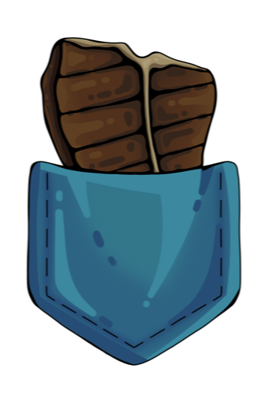

Custom dashboards
Command centers, admin views, planning boards, and data surfaces built around the way you actually work.

Pocket Steak — StackDPocket Steak StackD builds practical web tools for messy real-life workflows: dashboards, trackers, decision systems, and small apps that make a day run cleaner.
Command centers, admin views, planning boards, and data surfaces built around the way you actually work.
Small apps for chores, shifts, lists, approvals, tracking, and recurring processes that outgrew notes.
Ranking, voting, comparison, and lightweight research tools for choices that need more structure.
Focused automations for cleanup, extraction, summarization, and repeat tasks where software can save time.
We make focused web apps for households, teams, projects, and niche workflows that are too specific for off-the-shelf software. The pattern is simple: find the recurring friction, design the calm version, then ship something people can actually use every day. Public demos will be added here later when they are ready to represent the work properly.
Bring the recurring chaos. Pocket Steak StackD can help turn it into a usable system.